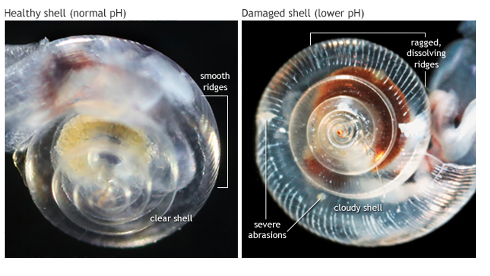
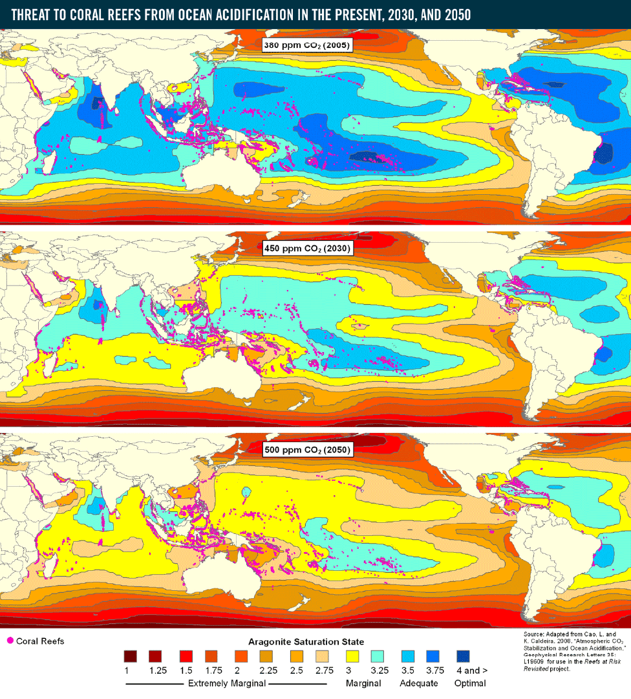

En este último tiempo, el pH de los océanos ha ido en aumento, lo cual en un futuro llegaría a generar cambios irrevesibles para todos los seres vivos que habitan sus aguas, y por consiguiente, tambien para nosotros.
Como antecedente tenemos que en el océano, en donde habitan una gran cantidad de flora y fauna, tiene un pH básico que va desde 8.0 a 8.3, lo cual permite que exista la vida marítica tal y como la conocemos.
Sin embargo, ¿Qué es el pH?
El ph es una medida que sirve para cuantificar la acidez de una disolución acuosa, en este caso, la del océano.
Y, ¿Qué está sucediendo?
En los aproximadamente 250 años que han pasado desde la Revolución industrial, el pH promedio en la superficie de los océanos ha ido en descenso.
Este cambio aparentemente insignificante representa un aumento del 30% en la acidez de los océanos en comparación con la época preindustrial.
Ahora, ¿Por qué sucede esto?
Esta acidificación de los océanos que se ha estado experimentando en el último tiempo, deriva del aumento de emisiones humanas de dióxido de carbono.
Posterior a la revolución industrial, la quema de combustibles fósiles se ha visto en aumento, y por lo tanto, tambien los niveles de CO2 que se liberan a la atmósfera tal como se puede apreciar en el siguientegráfico.
Suma total de las emisiones de CO2 producidas por combustibles fósiles y cemento desde 1900 a nivel mundial
Por otro lado, también tenemos aquí, un grafico que nos muestra algunos de los países que más han contribuido a la emisión de estos gases:
Y asi como las emisiones a nivel mundial se han disparado, nuestro país no es la exepción a ello:
Suma total de las emisiones de CO2 producidas por combustibles fósiles y cemento desde 1900 en Chile
Al igual que con otros gases de la atmosfera, la cantidad de CO2 que existe mantiene una armonía con la que hay en los océanos. Esto sucede debido a la alta capacidad de absorción de CO2 propia de los océanos.
“hay aproximadamente 60 veces más CO2 en los océanos que en la atmósfera.”
Esto, en cierta medida, mitiga el ritmo y el impacto del cambio climático, dado que la atmosfera logra tener 30% menos de CO2 si esto no fuera así.
Pero, por otro lado, cuando el CO2 entra al océano, reacciona con el agua, produciendo ácido carbónico, lo cual aumenta el acidez del mar.
Si bien, hasta el momento el pH promedio de los océanos ha disminuido tan solo en 0,1 las proyecciones para el futuro no son mejores:
“Para finales de siglo, el pH habrá caído 0,4 unidades, casi el doble de los niveles naturales de acidez del océano”
En otras palabras, la acidez aumentaría en un 250%.
¿Qué consecuencias trae esto?
La acidificación de los océanos produce una reducción de la cantidad de iones de carbonato en el agua. Muchos animales marinos necesitan iones carbonato para el carbonato cálcico indispensable en la formación de esqueletos y conchas. Esto afectará su desarrollo y su capacidad de reproducción, llegando a suponer un peligro para sus poblaciones.
Ejemplo de los efectos de la acidificación del océano en los caparazones. El caparazón sano de la izquierda es transparente con crestas suaves; por el contrario, el caparazón expuesto a agua más ácida y corrosiva está turbio, irregular y marcado con puntos débiles
Algunas de las especies más afectadas son:
Los pterópodos (caracoles marinos pequeños), también disminuirían, teniendo un efecto importante en la cadena alimenticia dado que son la fuente de alimento de muchos tipos de peces ballenas y pájaros de las regiones polares y subpolares.
Los efectos en los corales también son preocupantes, ya que son altamente sensibles al entorno
Un cuarto de todas las especies marinas depende de los arrecifes de coral como refugio, guardería, fuente de alimentación y área de desove
El mapa muestra el estado de saturación de aragonito estimado (un indicador de la acidificación del océano) para CO2 ,niveles de estabilización de 380 partes por millón (ppm), 450 ppm y 500 ppm, que corresponden aproximadamente a los años 2005, 2030 y 2050. Los puntos rosados representan arrecifes de coral. Los colores azules más oscuros representan un estado de saturación de aragonito adecuado para apoyar el crecimiento de los arrecifes de coral; los colores amarillo-turquesa representan áreas de crecimiento marginal del coral, y los colores rojo-naranja representan ambientes extremadamente marginales que probablemente no respalden el crecimiento y la supervivencia del coral.
Ahora que conocemos lo que está sucediendo, es nuestro turno de hacer algo. Informate aquí para saber que hacer al respecto y conocer más acerca del tema. No solo los océanos corren peligro, si no que también el mundo tal y como lo conocemos.